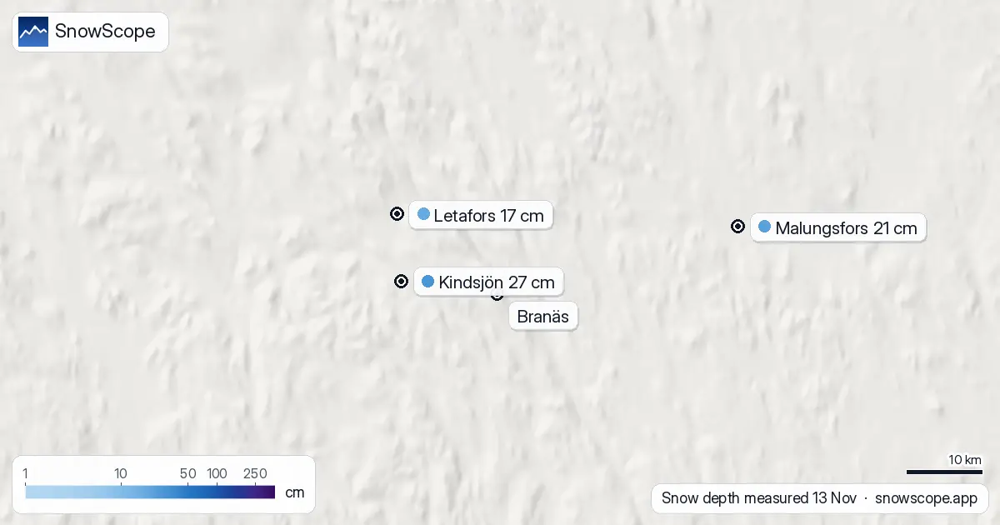
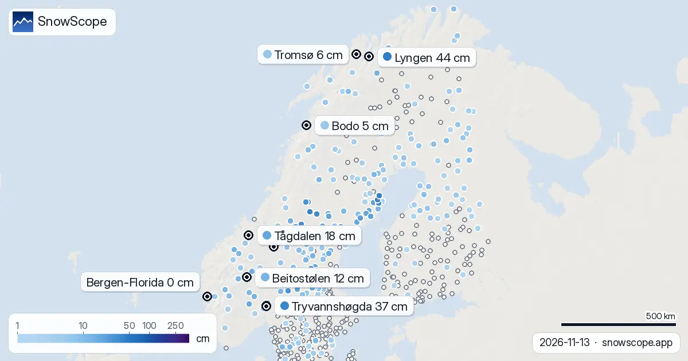

Branäsin lumitilanne: mäen asemalla 27 cm, joen varressa ei mitään (14. marraskuuta 2026)
Pohjois-Värmlandissa korkeuden vaikutus näkyy tällä viikolla paremmin kuin missään muualla. Aamulla 13. marraskuuta Kindsjönin sääasemalla, 13 km Branäsista ja 425 metrin korkeudessa, mitattiin 27 cm lunta. Letaforsissa, 338 metrissä, lunta oli 17 cm. Alhaalla laaksossa, 100 metrissä sijaitsevassa Östmarkissa, ei ollut lainkaan. Branäs itse ulottuu Klarälven-joen varren 150 metristä huipun 568 metriin, eli juuri tälle välille.
Katso kohteen Branäs lumiennuste reaaliajassa SnowScope-sovelluksessaLumensyvyys, puuterihälytykset ja 3D-kartta, ilmaiseksi.
Yläosa valkoinen, alaosa vihreä
Kindsjönissä oli 10. marraskuuta 1 cm ja 13. päivänä 27 cm; Letaforsissa lumensyvyys nousi viimeisen vuorokauden aikana 11 sentistä 17 senttiin. Molemmat asemat ovat metsässä kukkuloilla, suunnilleen samalla korkeudella kuin Branäsin yläpuolisko. Kylä ja alimmat hissit ovat paljon alempana, lähempänä Östmarkin paljasta maata.
Arviomme mukaan viimeisen seitsemän päivän aikana on tullut uutta lunta noin 14 cm huipulle ja 4 cm alaosaan, eli omat lukumme näyttävät saman kuvan.

Leutoja päiviä tiedossa
Ennusteemme mukaan alaosaan ei tule seuraavien seitsemän päivän aikana juuri lainkaan lunta ja huipulle noin 3 cm. Muut ennusteet ovat yhtä mieltä siitä, että sää lauhtuu: alaosassa noin 90 % sademäärästä tulee vetenä ja huipulla noin puolet, ja lumiraja nousee noin 590 metriin, hieman huipun yläpuolelle. Tuore lumi tulee painumaan.
Mitä 46 talvea kertovat
Tavallinen lumensyvyys on 14. marraskuuta 5 cm huipulla ja 1 cm alaosassa. Tämänpäiväinen huippu on selvästi sen yläpuolella. 15. joulukuuta mennessä tavalliset luvut ovat 26 cm huipulla ja 10 cm alaosassa, ja noin joka kuudes talvi alaosassa ei ole silloinkaan luonnonlunta.
Tilastot näyttävät myös, että lumipäiviä on alaosassa aiempaa vähemmän: ensimmäisten 15 talven 132 päivästä viimeisten 15 talven 95 päivään. Kuten muutkin Keski-Ruotsin matalat hiihtokeskukset, Branäs on riippuvainen lumetuksesta avatakseen ajallaan.
Avaus
Branäsin virallinen avausviikonloppu on 11.–13. joulukuuta, ja kausi päättyy 4. huhtikuuta. Hissit eivät pyörineet 13. marraskuuta; lyhyt latulenkki oli auki.
Vinkkejä laskijoille
- Jos haluat nähdä kunnon lunta tänä viikonloppuna, aja Kindsjönin ympäristön metsäteille sen sijaan, että jäisit joen varteen.
- Märkä ja raskas lumi oksilla tällaisen yön jälkeen hidastaa metsäteillä liikkumista; varaa aikaa.
- Katso Branäsin rinne- ja sääsivu ennen kuin suunnittelet ennen kauden alkua tehtävää matkaa.
Lisää karttoja (ulkoiset sivustot)
Lähteet ja tekijät
- SMHI, avoin data: päivittäinen lumensyvyys Ruotsin sääasemilla www.smhi.se/data/meteorologi/ladda-ner-meteorologiska-observationer
- Branäs, virallinen sivusto: avauspäivät ja hissitilanne, luettu 13.11.2026 www.branas.se/oppettider/
- Branäs, rinteet ja sää (virallinen) www.branas.se/skidakning-i-branas/backar-och-vader/
Näistä luvuista
Mitattu lumi: aamulukemat 13. marraskuuta 2026 Ruotsin (SMHI:n avoin data), Suomen (Ilmatieteen laitoksen avoin data, CC BY 4.0) ja Norjan (MET Norwayn asemaraportit, CC BY 4.0, julkaisija Ogimet) virallisilta sääasemilta. Norjan kansallinen lumikartta seNorge (NVE ja MET Norway, NLOD) antaa rinteille arviot 1 km:n ruudukossa. Omat lukumme: SnowScopen ennuste seuraaville seitsemälle päivälle hiihtokeskuksen kolmella korkeudella, verrattuna riippumattomiin ennusteisiin (ECMWF, ICON, GFS, GEM) ajalle 14.–20. marraskuuta; 46 menneen talven lumihistoria (1980-81–2025-26), korkeuden mukaan korjattu menneisyyden malli. Avauspäivät: hiihtokeskusten omat sivut, luettu 13.11.2026. Rinteiden pituus ja hissien määrä: OpenSkiMap-kartoitus.
Viralliset lumivyöryennusteet: Lavinprognoser (Naturvårdsverket)
Viittaa tähän raporttiin
Tutkimukseen, opetukseen tai mediaan: luvut ja kaaviot ovat vapaasti käytettävissä CC BY 4.0 -lisenssillä tällä lähdeviitteellä.
SnowScope (2026), Branäsin lumitilanne: mäen asemalla 27 cm, joen varressa ei mitään (14. marraskuuta 2026), https://snowscope.app/blog/fi/2026/11/branas-snow-conditions-14-november-2026.html, luettu 2026-11-14
SnowScope (Atlas Labs). (2026, November 14). Branäsin lumitilanne: mäen asemalla 27 cm, joen varressa ei mitään (14. marraskuuta 2026). SnowScope snow reports. https://snowscope.app/blog/fi/2026/11/branas-snow-conditions-14-november-2026.html
BibTeX
@misc{snowscope2026branassnowconditions14no,
author = {{SnowScope (Atlas Labs)}},
title = {Branäsin lumitilanne: mäen asemalla 27 cm, joen varressa ei mitään (14. marraskuuta 2026)},
year = {2026},
month = nov,
howpublished = {\url{https://snowscope.app/blog/fi/2026/11/branas-snow-conditions-14-november-2026.html}},
note = {Published 2026-11-14 20:11 UTC; accessed 2026-11-14}
}· CC BY 4.0 · Menetelmät, data ja työkalut →
Branäs: lumi ja lämpötila korkeuden mukaan, tämä talvi ja viime talvi (työkalut) →
Seuraa: Branäs
Ilmainen: viesti, kun uutta lunta on tulossa, ja ennuste joka aamu.
Lisää lumiraportteja

Mitattu lumensyvyys Norjassa 13. marraskuuta 2026: Oslon yläpuolella Tryvannshøgdalla 37 cm, Lyngenissä Tromssan läänissä 44 cm, sisämaan laaksoissa 10–18 cm, Bergenissä, Trondheimissa ja Finnmarkin sisäosissa paljas maa.

Mitattu lumensyvyys Suomessa 13. marraskuuta 2026: 58 asemaa 161:stä valkoisia, lähes kaikki 64. leveyspiirin pohjoispuolella, paksuin vain 13 cm Kilpisjärvellä. Etelä, myös Helsinki ja Tampere, on paljas.

Uumajassa mitattiin 13. marraskuuta 2026 20 cm lunta, kun keskiviikkona maa oli paljas. Miltä kaupungin ympäristön asemat näyttävät, miksi tämä on aikaista ja kestääkö lumi maanantain sateen.